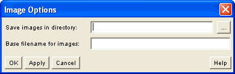

You can open the Image Options panel from the Options menu on the WebEQ Publisher main screen. These options only affect the equation output formats which generate images.

Save images in directory:
By default, images are saved in the same directory as the output file. Image filenames are the same as the output file (stripped of its extension, if any), with a number and the extension ".jpg" or ".png" appended. So, for example, if the output file is named "formula.html," the images (one per equation) will be written to "formula1.jpg," "formula2.jpg," etc, when generating JPEGs.
If you specify a directory name here, it will be interpreted as a path name relative to the output file; the named directory will be created within the output file's directory.
If you move the output file to another location, you should move these files to the same place so that the browser can find them. If you want to keep them separated from the HTML file, you will need to edit the <IMG> tags to point to their new location.
Base filename for images:
This field specifies the base name for image files. Ordinarily images are given names formed by taking the output document base name, appending a sequence number, and the image suffix. If you enter a base name here, this same numbering system will be used. However, no sequence number is appended to the first image encountered, since this is the behavior most commonly desired when processing a single image.